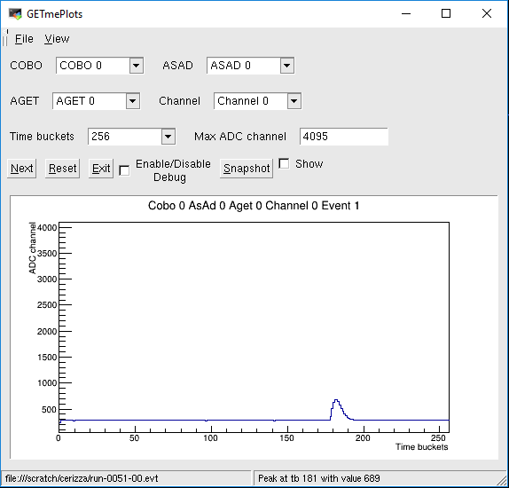

GETmePlots is a ROOT-based gui that provides a diagnostics tool for GET electronics. It is interfaced to NSCLDAQ GET and it allows to inspect any channel in the AGET chips of a CoBo board. The core of the program is the GETDecoder, a C++ library that reads and unpacks the data frames. Both full-readout and zero-suppression modes have been developed. At the moment it is possible to inspect only recorded files, but in future an online version will be deployed.
The GUI is very immediate. The combo boxes are not available until an .evt file is loaded by using the menu options "File->Open". Once the file is loaded correctly, one can choose COBO, ASAD, AGET, and channel numbers. According to the CoBO configuration file, the number of time buckets can be consequently adjusted.

By clicking "Next", the waveforms corresponding to the selected channel is displayed in the window. For debugging purposes, a check button is available. This option printouts on terminal a formatted version of the raw frame.
To compare waveforms between events or .evt files, it is possible to snapshot the current plot, and by using the "Show" button, overlaying to the one of interest. This option allows quick diagnostics for timing and amplitude cross-checks. At the bottom of the GUI, a status bar provides information on the time bucket and the ADC value corresponding to the maximum of the waveform.
The button "Reset" erases from memory the event and snapshot histograms for the currently loaded file. It also resets the event number counter.